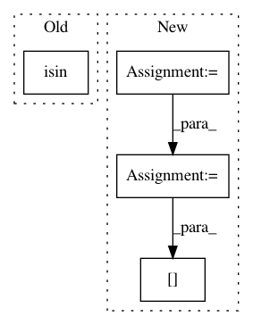

5a4260be766333d81bddbb0fa5fd591fc78bd763,scanpy/get.py,,obs_df,#,70
Before Change
var_bool = adata.raw.var.index.isin(var_names)
print(var_names, var_symbol)
else:
var_bool = adata.var.index.isin(var_names)
matrix = X[:, var_bool]
from scipy.sparse import issparse
if issparse(matrix):
matrix = matrix.toarray()
After Change
if use_raw:
var_idx = adata.raw.var_names.get_indexer(var_names)
else:
var_idx = adata.var_names.get_indexer(var_names)
// for backed AnnData is important that the indices are ordered
var_order = np.argsort(var_idx)
matrix = X[:, var_idx[var_order]]
from scipy.sparse import issparse
if issparse(matrix):
matrix = matrix.toarray()
df = df.join(
pd.DataFrame(
matrix, columns=np.array(var_symbol)[var_order], index=adata.obs.index
)
)
In pattern: SUPERPATTERN
Frequency: 3
Non-data size: 4
Instances
Project Name: theislab/scanpy
Commit Name: 5a4260be766333d81bddbb0fa5fd591fc78bd763
Time: 2020-12-03
Author: fidel.ramirez@gmail.com
File Name: scanpy/get.py
Class Name:
Method Name: obs_df
Project Name: scikit-learn-contrib/categorical-encoding
Commit Name: df9e0ba7b1de6862aa69a21f9cac7490f488eb40
Time: 2018-12-11
Author: jcastaldo08@gmail.com
File Name: category_encoders/leave_one_out.py
Class Name: LeaveOneOutEncoder
Method Name: transform_leave_one_out
Project Name: theislab/scanpy
Commit Name: 5a4260be766333d81bddbb0fa5fd591fc78bd763
Time: 2020-12-03
Author: fidel.ramirez@gmail.com
File Name: scanpy/get.py
Class Name:
Method Name: var_df